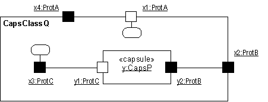
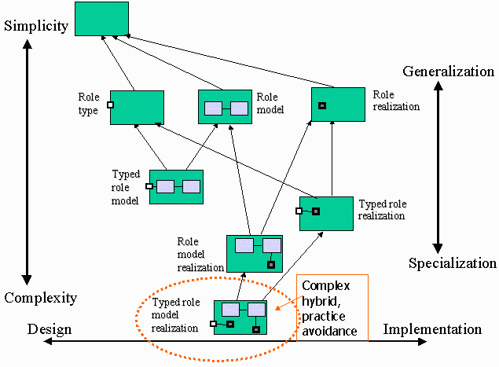

| Рекомендация: Капсула |
 |
|
| Связанные элементы |
|---|
РазделыПортыТак как порты находятся на границе капсулы, они могут быть видны как снаружи, так и изнутри капсулы. При просмотре снаружи все порты представляют один и тот же непроницаемый объектный интерфейс и различаются лишь по идентификаторам и ролям, которые они играют в протоколе. Напротив, при просмотре изнутри капсулы порты подразделяются на два типа: промежуточные порты и конечные порты. Они различаются по своим внутренним соединениям: промежуточные порты подключены к подкапсулам, а конечные - к конечному автомату капсулы. Вообще говоря, промежуточные порты служат для выборочного экспортирования "интерфейсов" внутренних подкапсул, а конечные порты - это пограничные объекты для конечного автомата капсулы. И промежуточные, и конечные порты могут находиться на границе капсулы и, как указано выше, недостижимы снаружи. Промежуточные портыПромежуточные порты - это порты, которые просто пропускают через себя все сигналы. Они предоставляют "отверстие" в оболочке инкапсуляции в капсуле, через которое подкапсулы могут контактировать с внешним миром, оставаясь невидимыми для него (и наоборот). Промежуточный порт подключен, через соединитель, к подкапсуле и обычно также подключен снаружи к некоторой другой "равноправной" капсуле. Они принимают сигналы от обеих сторон и просто передают их другой стороне, сохраняя направление потока сигналов. Это достигается без задержек и потерь информации, за исключением случая, когда к другой стороне не подключен соединитель. В последнем случае сигнал теряется. Промежуточные порты позволяют напрямую (с нулевой дополнительной нагрузкой) передавать сигналы, предназначенные для капсулы, в подкапсулу без вмешательства со стороны конечного автомата капсулы. Промежуточные порты могут находиться только на границе капсулы, следовательно, их область видимости всегда общедоступная. Конечные портыДля того чтобы быть полезной, цепочка соединителей должна завершаться конечным портом, соединенным с конечным автоматом. Конечные порты - это пограничные объекты для конечных автоматов из капсул (хотя, как будет показано ниже, некоторые из них служат также пограничными объектами для капсул). Конечные порты - это первичные источники и последние приемники всех сигналов, отправляемых капсулами. Эти сигналы создаются конечными автоматами капсул. Для отправки сигнала конечный автомат инициализирует операцию отправки или вызова на одном из своих конечных портов. Затем сигнал передается через подключенный соединитель, возможно, проходя при этом через один или несколько промежуточных портов и сцепленных соединителей, пока не достигнет другого конечного порта, обычно расположенного в другой капсуле. Поскольку связь, основанная на обмене сигналами, может быть асинхронной, конечный порт содержит очередь для сообщений, полученных, но пока не обработанных конечным автоматом (т.е. он играет роль почтового ящика). Прием сигнала и отправка в принимающий конечный автомат выполняется конечным автоматом согласно стандартной семантике UML. Как и промежуточные порты, конечные порты могут находиться на границе капсулы с общедоступной областью видимости. Эти порты называются общедоступными конечными портами. Такие порты являются пограничными объектами и конечного автомата, и содержащей его капсулы. Однако конечный порт может находиться и целиком внутри капсулы, будучи частью ее внутренней структуры реализации. Эти порты применяются конечным автоматом для связи с его подкапсулами или внешними слоями поддержки реализации. Эти внутренние конечные порты называются защищенными конечными портами, поскольку их область видимости защищена. Учтите, что тип порта полностью определяется его внутренними соединениями и его областью видимости вне капсулы; различные термины (промежуточный порт, общедоступный конечный порт, частный конечный порт) служат лишь сокращениями. Общедоступный порт без внутренних соединений может стать либо промежуточным, либо конечным портом, в зависимости от того, как он будет подключен впоследствии, но он может остаться и неподключенным и служить приемником поступающих сигналов. Область видимости портаС внешней точки зрения, порт - это просто порт; определить, является ли этот порт промежуточным или конечным, невозможно в принципе. Однако, если показано разложение капсулы на составные компоненты, то различие между конечным и промежуточным портами отмечено графически, как указано ниже.  Обозначение порта - диаграмма связи (вид изнутри) Триггеры на основе портовНа практике часто бывает, что два или более портов одной и той же капсулы используют один и тот же протокол, но семантически различны. Кроме того, один и тот же сигнал может появиться в нескольких ролях протокола, поддерживаемых различными портами капсулы. В любом случае, может потребоваться различать конкретный конечный порт, получивший текущий сигнал. Это позволит приложениям обрабатывать один и тот же сигнал по-разному в зависимости от источника этого сигнала, а также состояния. Такой тип триггера называется триггер на основе портов. Триггеры на основе портов моделируются в UML с помощью сторожевых условий, проверяющих соответствие конкретному исходному порту. Конечные автоматыСпецификация конечного автомата капсулы и спецификация допустимых последовательной протокола задаются с помощью стандартных конечных автоматов UML. Служба времениКак и следовало ожидать, в большинстве систем реального времени фактор времени является первоочередным. В общем случае, необходимо смоделировать две формы ситуаций режима реального времени: возможность активизировать задачи в заданное время дня и возможность активизировать задачи по истечении заданного интервала с определенного момента отсчета. Большинству систем, работающих в режиме реального времени, требуется явная и доступная непосредственно (в управляемом режиме) утилита времени - служба времени. Эта служба, доступная через стандартный порт (точку доступа к службе), преобразует время в события, которыми впоследствии можно будет управлять так же, как и другими событиями, основанными на сигналах. Например, при наличии такой службы конечный автомат может запросить уведомление в виде события "тайм-аута" при наступлении заданного времени дня или истечении заданного интервала. Таксономия капсулКак концепция, капсулы могут использоваться самыми разными способами. Возможные варианты применения капсул описываются в рамках иерархии и таксономии капсул.  Таксономия капсул с иерархией обобщения Базовая таксономия капсул - это:
Существуют три полезных гибрида этих базовых типов, представляющие собой сочетание этих базовых определений:
Оставшийся тип капсулы, 'типовая реализация модели роли', определяющая структуру и интерфейс, а также поведение в абстрактном (для интерфейса) и конкретном (для внутренней структуры) смыслах, сложна и может оказаться трудной для понимания при попытке ее правильно реализовать. Она упоминается на случай, если полнофункциональные тесты капсулы потребуется определить как часть самой капсулы, а следовательно, как два отдельных конечных автомата. В большинстве случаев такую конструкцию следует избегать. Представление UML 2.0Учтите, что текущее представление RUP для капсул основано на нотации UML 1.5. Большая часть материала может быть представлена в формате UML 2.0 с помощью концепции, описанной в разделе Концепция: структурированный класс.
Дополнительная информация приведена в разделе Различия между UML 1.x и UML 2.0. |
© Copyright IBM Corp. 1987, 2006. Все права защищены.. |